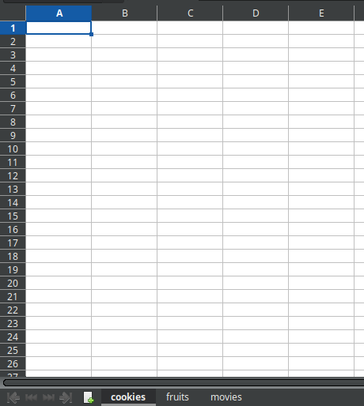
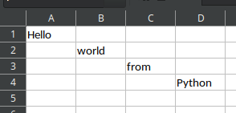
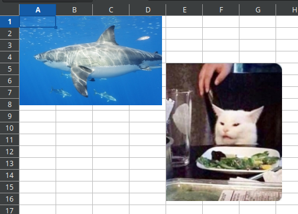
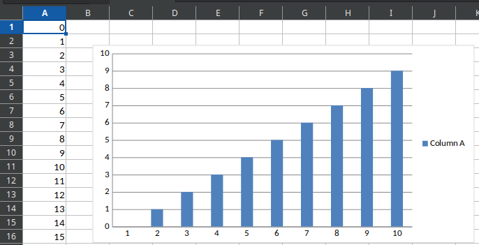
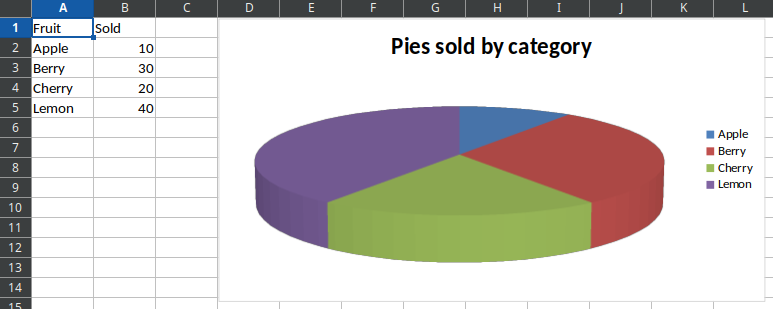
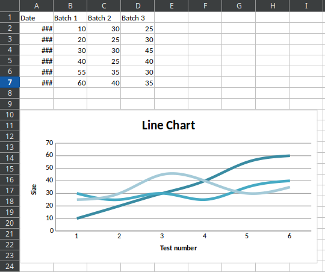

from datetime import date
from openpyxl import load_workbook # Load a workbook.
from openpyxl import Workbook # Write a Workbook.
from openpyxl.drawing.image import Image # Allow us used images.
from openpyxl.chart import Reference # References create a intercorrelation
# between the spreadsheet and charts.
from openpyxl.chart import PieChart # Allow us create PieChart2D
from openpyxl.chart import PieChart3D # Allow us create PieChart3D
from openpyxl.chart import LineChart # Allow us create LineChart
from openpyxl.chart.axis import DateAxis # Allow us use date type from some axisExcel Files with Python
openpyxl, if you still don’t have installed, you can run it this code on your terminal
pip install openpyxl
Seconly, creating the excel file sample.xlsx and so used the next functions set
Now import the excel sheet
wb = load_workbook(filename='sample.xlsx')we have two options for showing the names of each sheet inside the .xlsx file
print(wb.get_sheet_names()) # This is the first option
print(wb.sheetnames) # This is the second option
Read an Excel Spreadsheet
First, we have to load the workbook
wb = load_workbook(filename='sample_2.xlsx')If we want to select a specific sheet from the workbook
sheet_range = wb['Sheet']
print('This is the type', sheet_range)to selecting values from a column and specific row we can use
print(sheet_range['A1'].value)
print(sheet_range['B2'].value)
print(sheet_range['C3'].value)
print(sheet_range['D4'].value)Write an Excel Spreadsheet
To create a new Workbook and activate it
wb = Workbook()
ws = wb.active # Activate the workbookIn Excel as in other spreadsheets, we can use letters combined with numbers to specify a location, e.g. A1, B5, or C15 and so on.
ws['A1'] = 'Hello'
ws['B2'] = 'world'
ws['C3'] = 'from'
ws['D4'] = 'Python'
wb.save(filename='sample_2.xlsx') # Save the changes
Load an Image into an Excel Spreadsheet
As previously discussed, the first step will be to prepare the Excel spreadsheet.
wb = Workbook()
ws = wb.activenow we must use the next module.
from openpyxl.drawing.image import ImageFirst, is load the image
img = Image(img='assets/imgs/cat.jpg')So insert the image into a specific cell in the spreadsheet.
ws.add_image(img,'E5')Add another image to the same spreadsheet.
img_2 = Image(img='assets/imgs/shark.jpg')
img_2.anchor = 'A1'
ws.add_image(img_2)Saving the changes into the spreadsheet.
wb.save(filename='cat.xlsx')
Charts
To create a chart inside the Excel spreadsheet, it’s necessary to use the next module.
from openpyxl.chart import ReferenceBarchart
Pre-loading…
wb = Workbook()
ws = wb.activeFilling the spreadsheet with information, e.g., adding numbers between 0 and 16 on the first column
for i in range(16):
ws.append([i])we need to reference the values with spreadsheet features.
values = Reference(worksheet=ws, min_col=1, min_row=1, max_col=1, max_row=10)now, create the object barchart and add the previously referenced values.
barchart = BarChart()
barchart.add_data(values)Finally, put the barchart in the spreadsheet and save it.
ws.add_chart(chart, 'A1')
wb.save(filename='chart.xlsx')
Piechart
We can make 2D and 3D piecharts, depending on our goal, we should use the modules below.
from openpyxl.chart import PieChart
from openpyxl.chart import PieChart3D First we could use the artificial data below
data = [
['Fruit','Sold'],
['Apple',10],
['Berry',30],
['Cherry',20],
['Lemon',40],
]Pre-loading…
wb = Workbook()
ws = wb.activeFilling the spreadsheet with the previous data.
for row in data:
ws.append(row)we need to reference the data and labels with spreadsheet features.
labels = Reference(ws,min_col=1,min_row=2,max_row=5)
data = Reference(ws,min_col=2,min_row=1,max_row=5)now, create the object piechart and add the previously referenced values.
pie = PieChart() # If we want to make a 2D piechart
pie = PieChart3D() # If we want to make a 3D piechart
pie.add_data(data,titles_from_data=True) # If labels are from the data
pie.set_categories(labels) # Use the labels as the categories
pie.title = 'Pies sold by category' # Put a title in piechart Finally, put the piechart in the spreadsheet and save it.
ws.add_chart(pie,'D1')
wb.save('pie_3d.xlsx')
Linechart
We can make a linechart using the below module.
from openpyxl.chart import LineChartFirst we could use the artificial data below
data = [
['Date','Batch 1','Batch 2','Batch 3'],
[date(2015,9,1), 10, 30, 25],
[date(2015,9,2), 20, 25, 30],
[date(2015,9,3), 30, 30, 45],
[date(2015,9,4), 40, 25, 40],
[date(2015,9,5), 55, 35, 30],
[date(2015,9,6), 60, 40, 35],
]Pre-loading…
wb = Workbook()
ws = wb.activeFilling the spreadsheet with the previous data.
for row in data:
ws.append(row)we need to reference the data and labels with spreadsheet features.
data = Reference(ws,min_col=2,min_row=1,max_col=4,max_row=7)now, create the object piechart and add the previously referenced values.
line_chart = LineChart()
line_chart.title = 'Line Chart' # Linechart title
line_chart.legend = None # Allow the legeng
line_chart.style = 15
line_chart.y_axis.title = 'Size' # y-axis label
line_chart.x_axis.title = 'Test number' # x-axis label
line_chart.add_data(data,titles_from_data=True) # Use the labels from dataFinally, put the linechart in the spreadsheet and save it.
ws.add_chart(line_chart,'A10')
wb.save('line.xlsx')